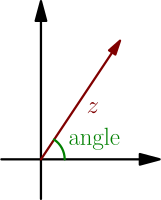

Angle and Length¶
Instead of thinking about a complex number with $x$ and $y$ coordinates, as in $x + yi$, we can think of it as an angle and length of the vector. Just like in unit circle trig (TODO), a bigger angle means counter-clockwise and zero means right.

The angle may be bigger than 180 degrees:
Alternatively, the angle can be negative:
In general, angles that differ by a full turn (360 degrees or $2\pi$ radians), such as the ones in the above two pictures, are considered to be the same.
Examples:
- The length of $i$ is $1$. The angle of $i$ is 90 degrees, which is $\pi/2$ radians.
- The length of $5$ is $5$. The angle is zero.
- The length of $-5$ is $5$. The angle is 180 degrees.
- The length of $0$ is $0$. The angle is undefined. Remember this somewhat annoying detail when you want to use the angle of a complex number.
Generally, the length of a complex number $a + bi$ is the vector length $\sqrt{a^2+b^2}$ (TODO). The angle is more difficult to calculate. In computer programming, you can use atan2 to calculate the angle. TODO: explain how to calculate angle in general
Absolute value of complex number¶
The absolute value of a complex number $a+bi$ is defined to be its length: $$ \abs{a+bi} = \text{length of $a+bi$} = \sqrt{a^2+b^2} $$ Because the length of a real number is its absolute value, this behaves as expected when $a+bi$ happens to be a real number (that is, $b=0$).